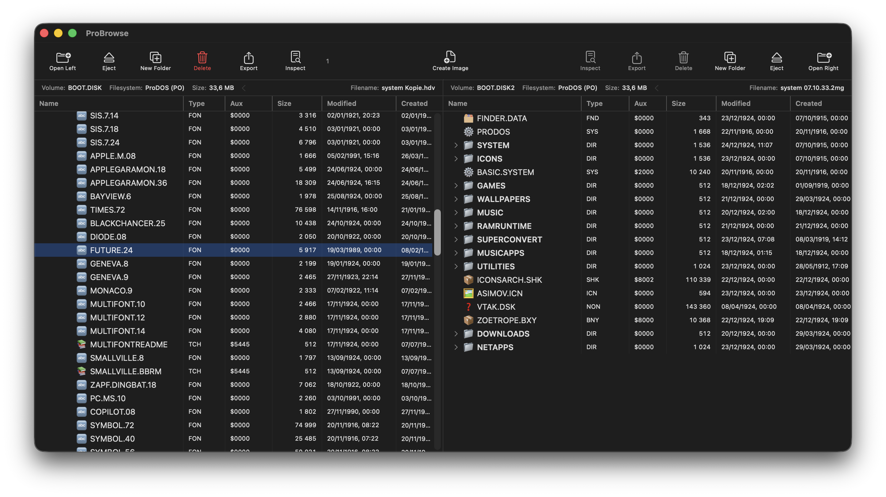
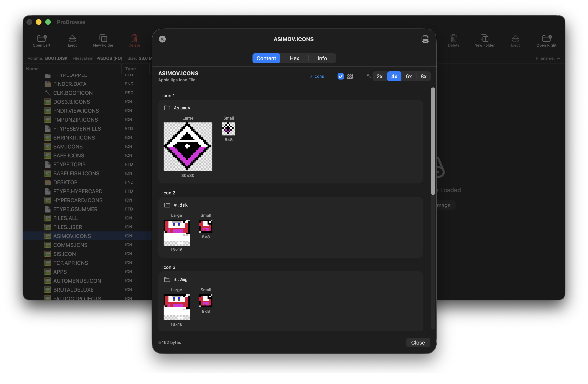
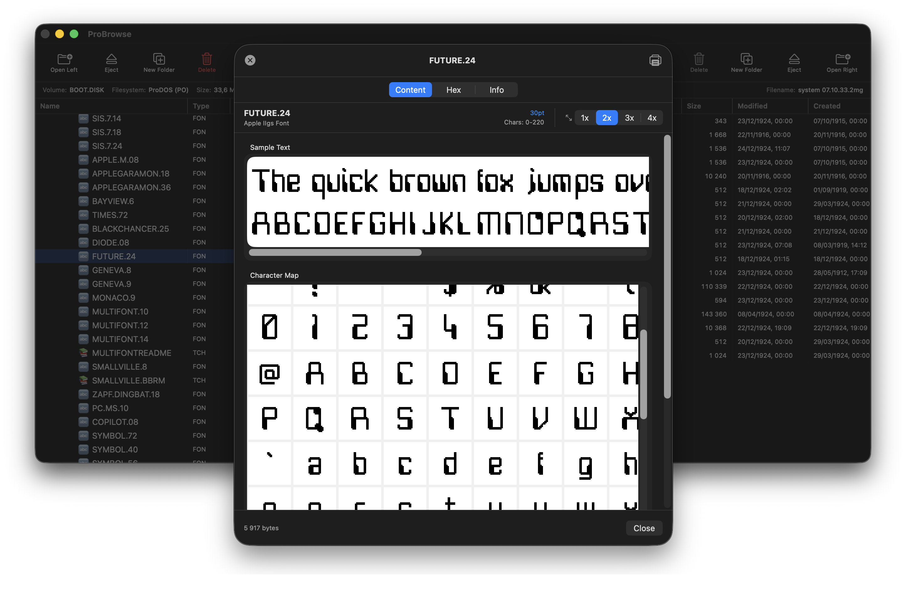
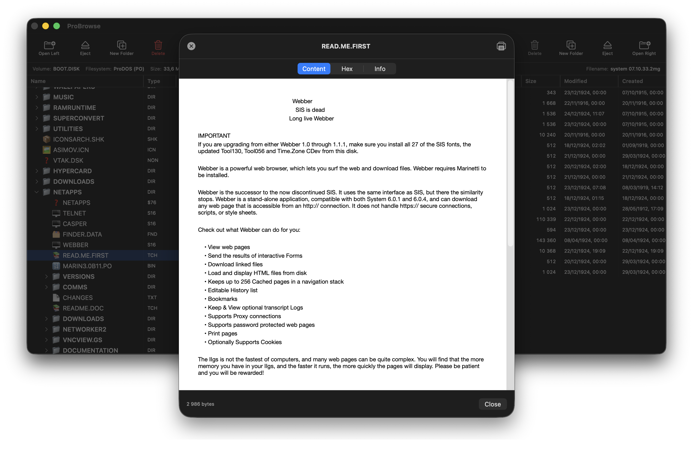
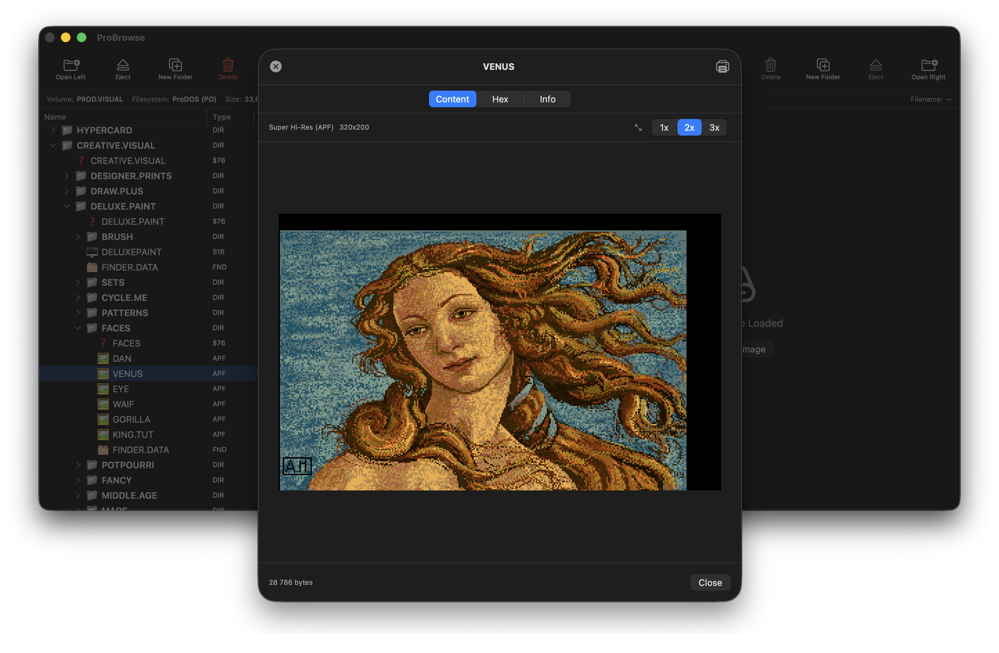
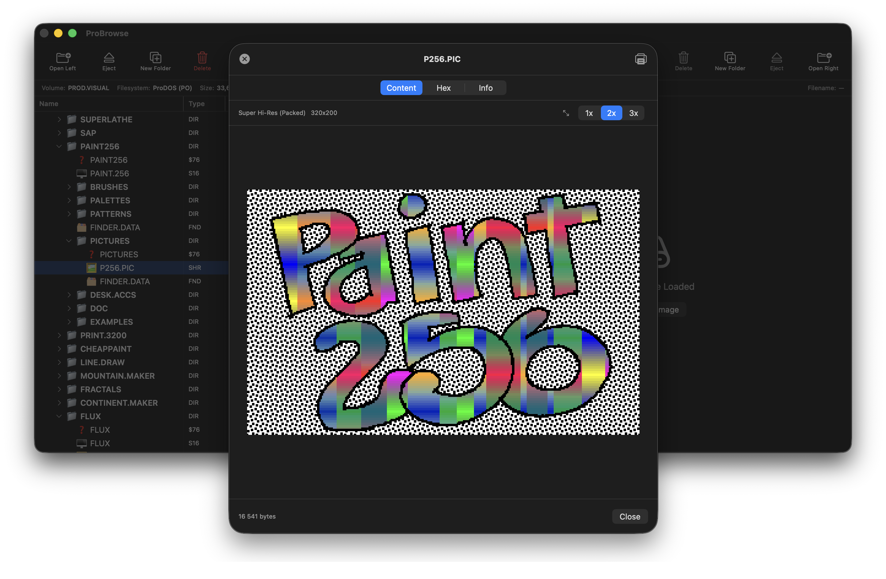

ProBrowse

Features
- Dual-Pane BrowserWork with two disk images at once.
- File InspectorView any file with ⌘ I or right-click.
- Native ProDOSRead & write in pure Swift.
- DOS 3.3Full read & write support.
- UCSD PascalRead-only volume support.
- ShrinkIt ArchivesBrowse, extract, create .shk / .sdk / .bxy.
- Binary IIRead & write .bny / .bqy.
- Drag & DropCopy between images or import from Finder.
- Change File TypeRight-click to edit type & aux type.
- 200+ File TypesComplete ProDOS file-type database.
- Graphics PreviewHGR, DHGR, SHR and APF — inline.
- Font PreviewApple IIgs fonts & hi-res screen fonts.
- Icon PreviewIIgs Finder icons w/ palette & transparency.
- BASIC ViewerSyntax-highlighted Applesoft & Integer.
- Merlin Viewer6502 assembler with highlighting.
- Disassembler6502 and 65816 machine code.
- AppleWorksClassic & GS word, DB, spreadsheet.
- Teach ViewerIIgs Teach docs — fonts, styles, color.
- Dates & TimesProDOS create / modify timestamps.
- ExportExtract files to your modern Mac.
Screenshots
{kind=link}

{kind=link}

{kind=link}

{kind=link}

{kind=link}

{kind=link}

Supported Formats
Disk Image Formats
| Format | Extension | Read | Write |
|---|---|---|---|
| ProDOS Order | .po | ● | ● |
| DOS Order | .do | ● | ● |
| Universal 2IMG | .2mg | ● | ● |
| Hard Disk Volume | .hdv | ● | ● |
| Generic DSK | .dsk | ● | ● |
| UCSD Pascal Volume | .vol | ● | ○ |
Archive Formats
| Format | Extension | Read | Write | Description |
|---|---|---|---|---|
| ShrinkIt Disk | .sdk | ● | ● | Compressed disk images |
| ShrinkIt Archive | .shk | ● | ● | Compressed file archives |
| Binary II + ShrinkIt | .bxy | ● | ● | Binary II wrapped ShrinkIt |
| Binary II | .bny, .bqy | ● | ● | Binary II archives |
| Gzip | .gz | ● | ○ | Gzip compressed files |
| ZIP | .zip | ● | ○ | ZIP archives |
All archive formats are handled natively — no external tools required.
File Systems
| File System | Read | Write | Notes |
|---|---|---|---|
| ProDOS | ● | ● | Full support, including subdirectories |
| DOS 3.3 | ● | ● | Full support |
| UCSD Pascal | ● | ○ | Read-only |
| ShrinkIt Archives | ● | ● | Native LZW compression |
| Binary II Archives | ● | ● | Full support |
Quick Start
- Open two disk images — one per pane.
- Browse files with full directory support.
- Press ⌘ I to inspect any file — BASIC, graphics, hex.
- Drag & drop files between images.
- Export files to your Mac.
- View Apple II graphics inline.
Current Limitations
- UCSD Pascal volumes are read-only.
- Gzip and ZIP archives are read-only.
- Beta quality — expect bugs!
Requires: macOS 14 (Sonoma) or later · Apple Silicon or Intel.
Get ProBrowse
Built with Swift and SwiftUI for modern macOS. MIT licensed. Contributions welcome.
Download Source on GitHub Report a Bug
⚠︎ Always back up your disk images before using beta software.